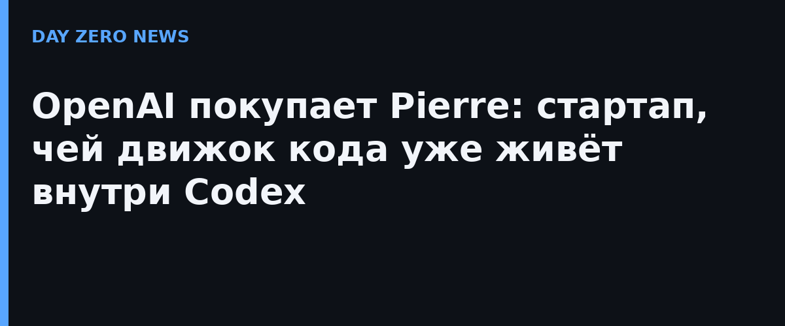

4 ноября OpenAI опубликовала на своём блоге анонс: компания приобретает Pierre Computer Company, Inc. — небольшую фирму из инструментов разработчиков. В портфеле Pierre четыре продукта: Code Storage (собственно хранилище кода), Trees, Diffs и Highlights — набор для навигации по репозиториям, сравнения версий и удобного ревью. Формулировка OpenAI сухая, но говорящая: покупка «расширяет инструменты Codex для создания, понимания и проверки кода».
Axios, получивший эксклюзив до анонса, расставляет акценты жёстче: технология Pierre уже встроена в Codex, а сделка бьёт прямо по GitHub — главному активу Microsoft в разработке. Сумма сделки не раскрывается. По сути OpenAI докупает тот слой, которым сегодня пользуются десятки миллионов через чужую площадку, — и забирает его в свой стек.
Свежесть шага понятна на фоне событий последних дней. Недавно OpenAI представила Pando — собственный Git-совместимый бэкенд, рассчитанный на тот объём разработки, который разгоняют агенты Codex. Теперь к нему добавляются чужие отточенные механизмы хранения и ревью. Бэкенд + хранилище + диффы = полноценная платформа, с которой GitHub конкурирует уже не только интерфейсом, но и скоростью агентов.
Код всей компании, история изменений и обсуждения в диффах переезжают внутрь платформы одного вендора с ИИ-агентами внутри. Мы уже разбирали недели, где агенты с доступом к внутренним системам сливали данные (WorkOS, GitBook): чем больше критичной инфраструктуры живёт в одном агентном контуре, тем дороже ошибка в его правах доступа. Для команд, которые присмотрятся к Codex как основному дому для кода, это повод заранее настроить разделение прав и аудит агентных сессий — а не после инцидента.